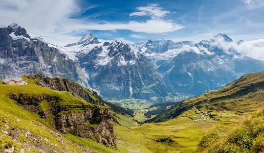

Wybrać się na wędrówkę w Alpy? Super pomysł. Ale w które? Jeśli masz wątpliwości - podpowiadamy: Salzburskie.
Są położone stosunkowo blisko naszego kraju, szybko dojedziemy tam autostradą spod Wiednia. Region Salzkammergut to jeden z najurokliwszych zakątków Austrii. Do jego wybitnej urody przyczyniają się liczne, duże jeziora. Mienią się błękitem między górskimi pasmami na podobieństwo fiordów. Z wodą tak czystą że dno widać daleko od brzegu, a latem na tyle ciepłą, że można się kąpać i plażować. Odbijają się w nich skalne urwiska, cieniste lasy i wieże starych kościołów.
Górska przyroda łączy się z pamiątkami bogatej historii. W Alpach Salzburskich już od starożytności wydobywano sól a zamożność owocowała inwestycjami w perły architektury i sztuki. Jak choćby Hallstatt - miasteczko zajmujące stromy brzeg turkusowego jeziora, powielane na milionach pocztówek.
Oferujemy tygodniowe wczasy w trzech opcjach, z wędrówkami o różnym stopniu trudności i różnej długości. Od łatwych nadjeziornych spacerów, przez wędrówki na średnich wysokościach, po wspinaczkę na piętra zielonych hal, z widokiem na sięgające 3000 m lodowce Dachsteinu.